How Substrate turns a company's authentication into an audited, multi-tenant system — without writing the governance.
Standing up authentication is fast. Standing up authentication you can trust in front of an auditor is not — that part is a tamper-evident log of every action, hard tenant isolation, a policy engine that actually blocks privileged operations, and attribution you can't forge. Teams either spend weeks building that layer and getting it exactly right, or they ship without it and hope.
This is a complete, multi-tenant authentication product built as a single slice on Substrate: a public landing and sign-in, self-service organization signup, an operator console, role-based dashboards, and a full audit surface. The product is the part you can see. The part that matters is what's underneath it: every governance guarantee here is structural — supplied and enforced by the substrate, not written in the slice. Speed is the consequence of not having to build — or get right — the dangerous part.
What I built in the slice — and what I didn't
| I wrote (the surface) | The substrate enforced (inherited, not built) |
|---|---|
| The SvelteKit app — every screen in this document | A tamper-evident audit log — every crossing recorded, by construction |
| The authored declarations — capability scopes, policies, the roles | Tenant isolation — each org's data and its audit log partitioned, unreadable across the wall |
| Two thin drivers — an argon2id password store, a durable session store | A policy engine — every privileged action policy-checked before it runs |
| Verified attribution — the acting account and org are taken from the resolved session, never from the caller |
I spent my time on product. I did not write an audit pipeline, a tenant-partitioning scheme, a policy evaluator, or an attribution model — and, more importantly, it could not forget to. Those guarantees aren't a library the app calls; they're the floor the app stands on.
The product, as anyone would see it
A public front door: sign in, or register a new organization.
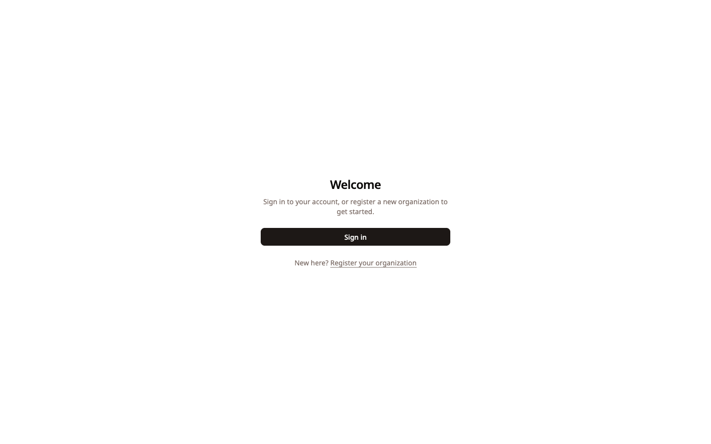
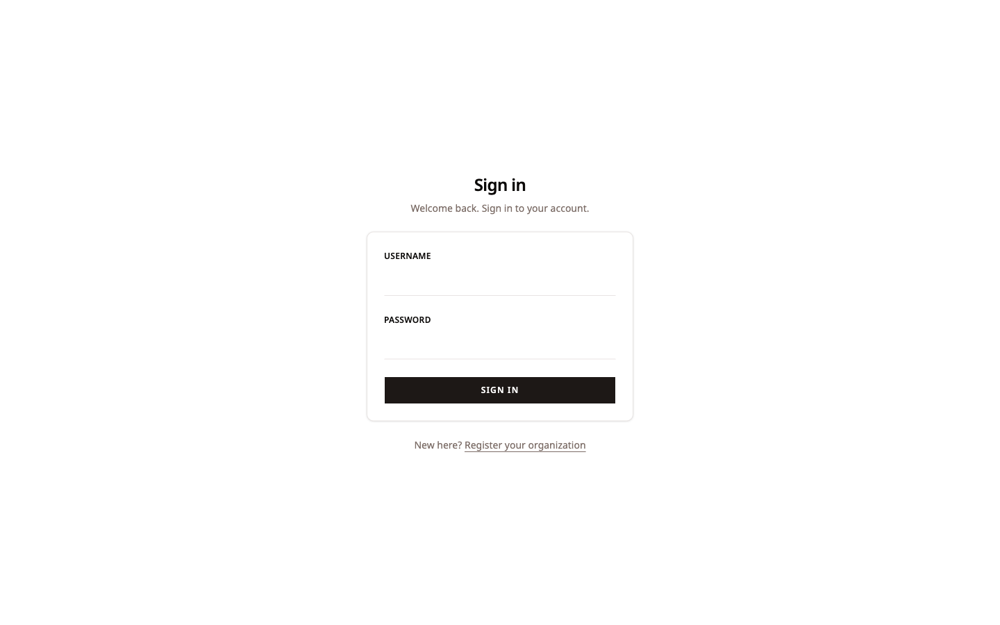
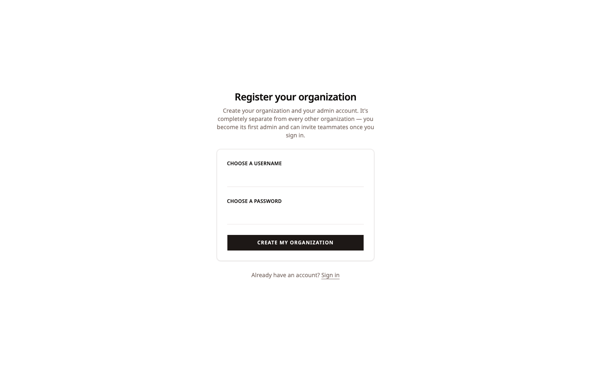
Nothing here looks unusual — and that's the point. The governance isn't a feature bolted onto the UI; it's behind every one of these forms, whether the form chooses to mention it or not.
A platform that bootstraps itself — and records its own genesis
A fresh deployment has exactly one account: a break-glass operator. Its only job is to mint the real founder, then step aside.
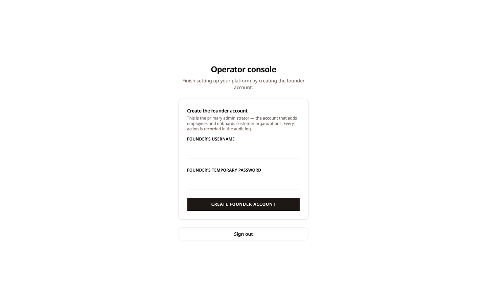
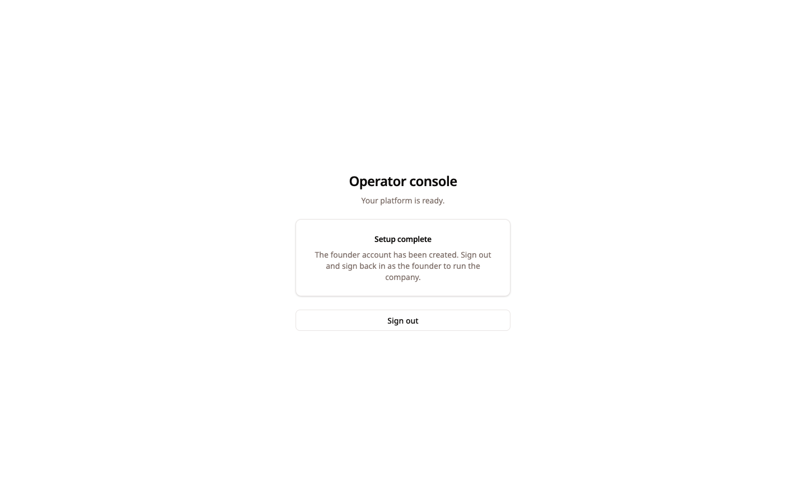
The founder signs in to an Owner dashboard — the account that onboards customer organizations, opens self-service signup, and adds teammates.
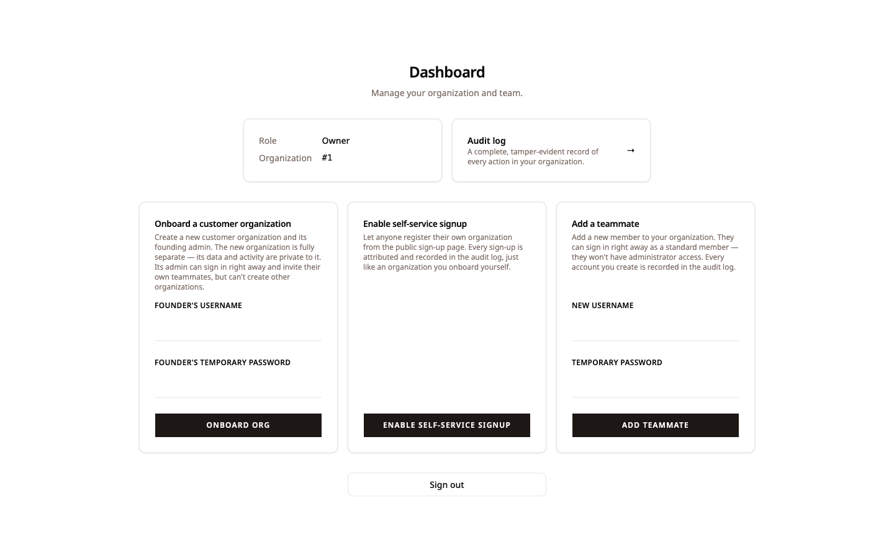
Every step of this bootstrap — the break-glass login, the founder's creation, the policy check that permitted it — is already on the record before the company has its first customer. The audit log doesn't start when you remember to turn it on. It starts at genesis, because there is no path that writes data without writing the record.
One capability model, three roles, zero drift
What an account can do is decided by what its
scope holds — the same capability model
the substrate enforces on every request. The UI simply
mirrors it. Hold tenancy.provision, and
you're an Owner: onboard organizations,
enable signup, add teammates. Hold only
identity.provision, and you're an
Admin: add teammates, nothing more.
Hold neither, and you're a Member.
tenancy.provision — onboard organizations,
enable self-service signup, add teammates, and read the
platform audit log.
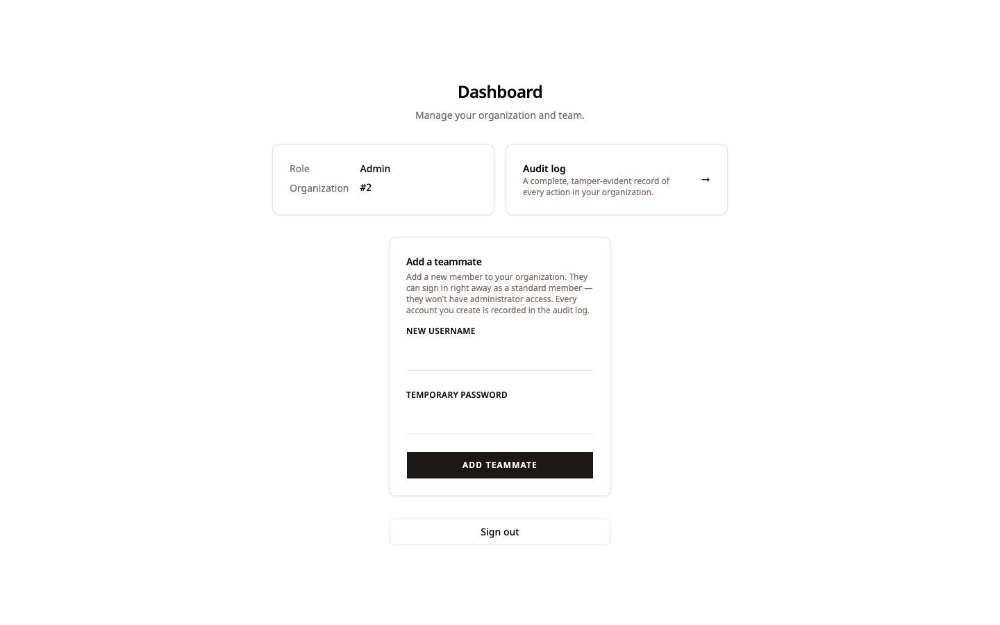
identity.provision — add teammates and read
the organization's own audit log, nothing more.
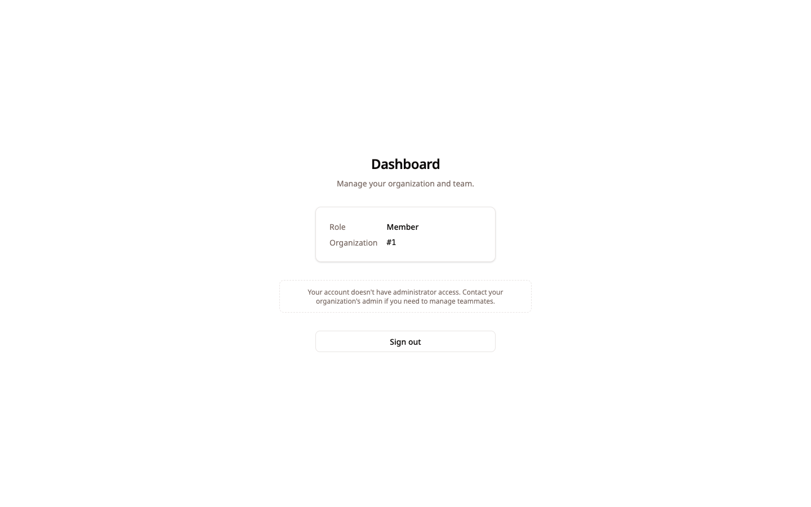
The three dashboards aren't three hand-coded layouts
with three sets of if checks the team
has to keep in sync with the backend. They're one
component reading one capability model — the same
one the substrate re-checks on every submission. The
surface can't drift from the boundary,
because the surface isn't the boundary. If the UI
showed a button it shouldn't, the substrate would
still refuse the action.
The audit log nobody had to write
This is the centerpiece. The operator's view is a complete, tamper-evident record of every action across the platform — each one attributed to a named account, captured automatically.
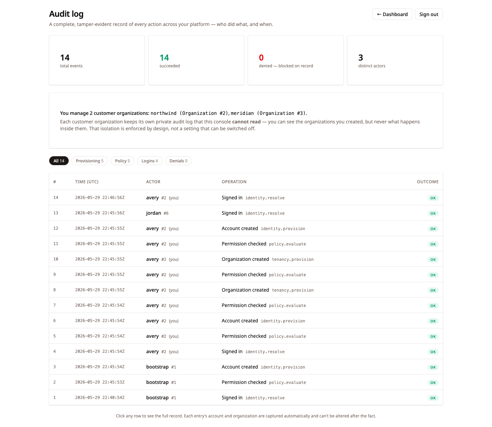
Read it top to bottom and the company's entire history is there: the founder signing in, onboarding two customer organizations, opening self-service signup, adding a teammate — and, at the very bottom, the break-glass genesis login. Fourteen events, every actor named, nothing missing and nothing extra.
That "nothing extra" is deliberate. Sessions are re-validated on every page load, but a re-presented session token is not a new login — so it writes no record. Only genuine authentications appear. The log is the signal a compliance reviewer actually wants, not a flood of per-request noise.
Click any row and the full sealed record slides open — the verified actor and organization, the exact operation, and the detail, all captured from the session rather than supplied by the caller:
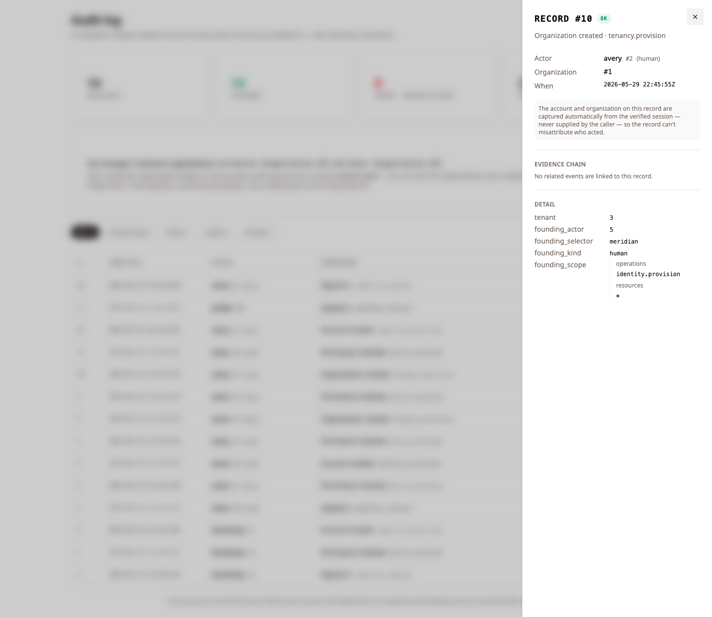
The account and organization on this record are captured automatically from the verified session — never supplied by the caller — so the record can't misattribute who acted. I wrote none of this attribution logic in the slice. It's a property of how the substrate resolves identity, surfaced as a record the app merely renders.
Tenant isolation as a fact, not a hope
When the operator onboards a customer organization, that org becomes a sealed boundary. Its founder signs in to their own Admin dashboard and their own audit log — a log that contains only their activity, and that the operator's console cannot read.
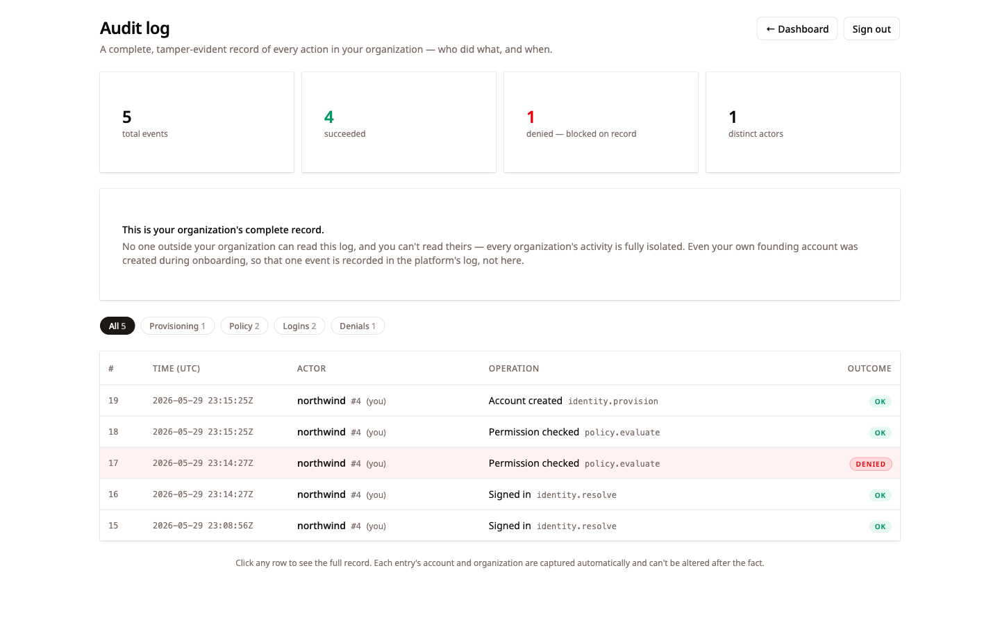
No one outside your organization can read this log, and you can't read theirs — every organization's activity is fully isolated. Even your own founding account was created during onboarding, so that one event is recorded in the platform's log, not here. The wall isn't a query filter the app remembers to apply: the substrate partitions audit reads by tenant; the app drains "everything," and the substrate hands back only what the caller is entitled to see.
The boundary holds — even when the UI is bypassed
Here is the difference between governance that's documented and governance that's enforced. The customer Admin's dashboard correctly offers no "onboard an organization" button — that's an operator-only power. But the UI hiding a button is convenience, not security. So we sent the request anyway, straight to the API, past the surface.
The substrate refused it — and wrote the refusal to the record:
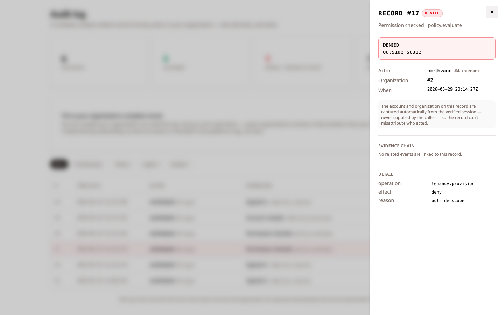
A red DENIED row, on the same
immutable log as every success. Open it, and the
record names exactly what was attempted:
operation: tenancy.provision,
effect: deny,
reason: outside scope. The over-reach
is not just blocked; it is evidence. A
client that bypasses the UI gains nothing and leaves
a permanent trace — the guarantee a governed system
is supposed to make.
Self-service signup — open to the public, still governed
Finally, the company opens its doors. Anyone can register their own organization from the public page — no account, no invitation.
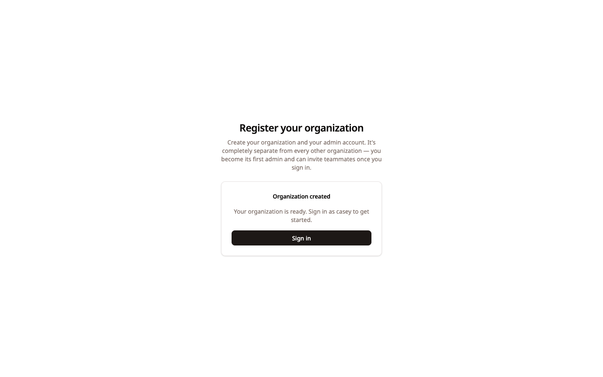
It would be easy for an anonymous endpoint to be the one ungoverned side door. It isn't. Each public signup is performed as a dedicated signup principal, scoped to exactly one power, so a self-service registration is a real, policy-checked, audited substrate operation — attributed to a resolvable identity, recorded in the platform log, indistinguishable in its governance from an organization the operator onboards by hand. The confirmation simply echoes back the name the registrant chose; there is no identity to "know" until this call creates one.
Why this was fast
Add up what I didn't build in the slice:
- I didn't build an audit log — every action was recorded by construction, including the ones I could have forgotten.
- I didn't build tenant isolation — the wall between organizations is enforced beneath the app, on reads and writes alike.
- I didn't build a policy engine — privileged actions are checked before they run, and refusals are recorded.
- I didn't build an attribution model — who-acted and in-which-org come from the verified session, unforgeable.
- I didn't build enumeration-safe credential handling, session re-validation, or break-glass bootstrap — those came with the floor.
What was left was the part teams should spend their time on: the screens, the roles, the words on the page, and two small drivers to plug in a real password store and durable sessions. A complete, multi-tenant, fully-audited authentication product — shipped as one slice — because the hard, dangerous, slow-to-get-right layer wasn't a project. It was the substrate.
Fast is the headline. Governed by construction is the reason.
Images are drawn from this slice's run on Substrate — a complete, focused demonstration of the governance model, captured screen by screen.